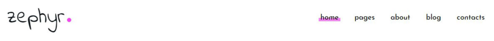
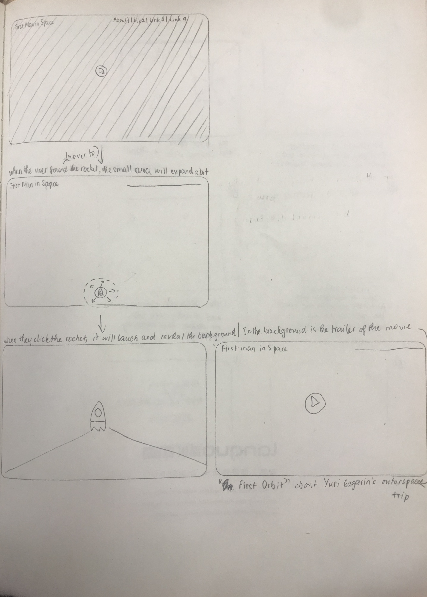
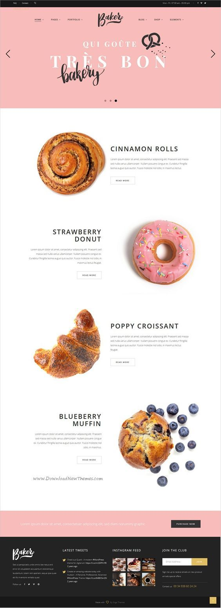

For the tab header, I wanted to make a tab header looks like this.
For the main page, I wanted to create a finding game there.
For the About page, the text will be taken from Yuri Gagarin’s background from his wikipedia site.
For the Space Program page, there will be 4 dropdowns for the section: Soviet Airforce Service, Selection and Training, Vostok 1, After Vostok 1. The text will be taken from Yuri Gagarin’s wikipedia site.
For the photo gallery, I wanted to make a responsive photo gallery according to the size of the screen. Thus, when the user hover an image, there will be a modal image appear and the background will be blurred. Here are the tutorials that I have found.
For the Awards and Honors page, I wanted to make it look like this.
There will be 4 sections on this page:
The user can click in the button “read more” to discover those section.